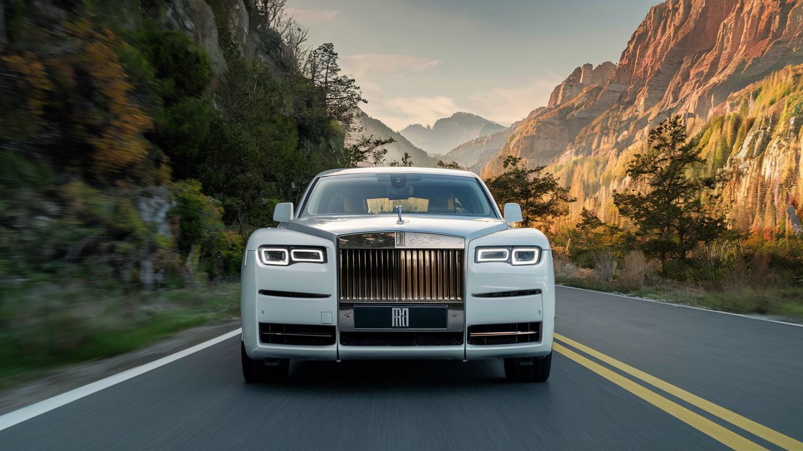
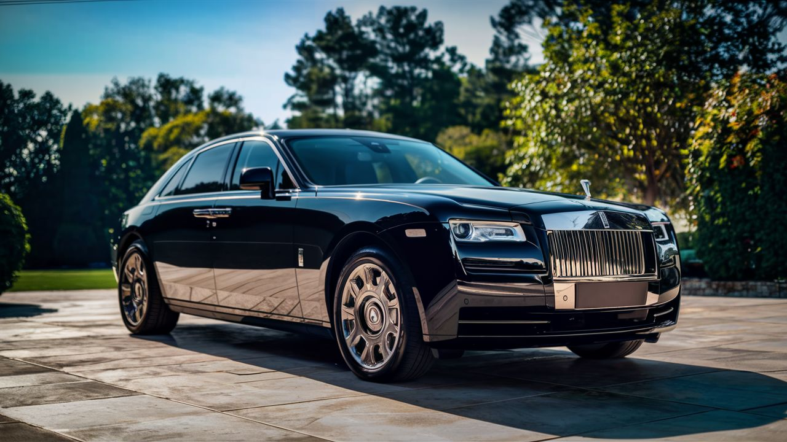
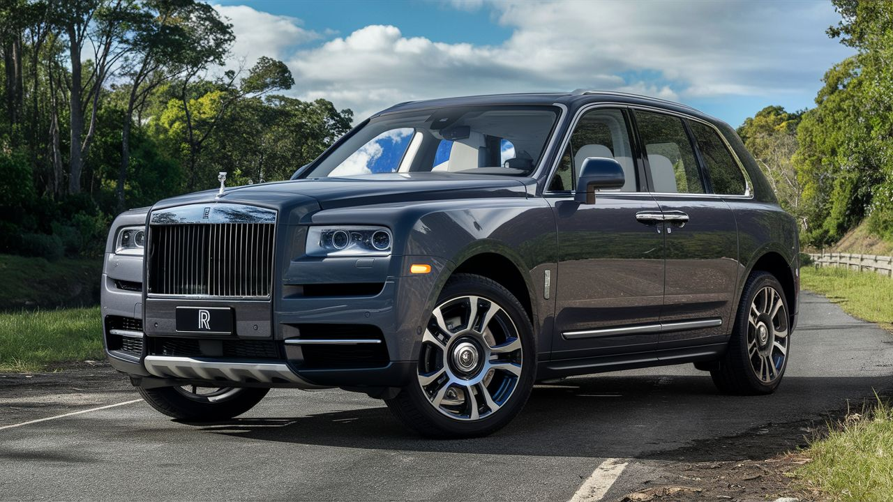

Rolls-Royce
Rolls-Royce es una marca de automóviles de lujo fundada en 1906. Conocida por su calidad, elegancia y prestigio, Rolls-Royce ha sido una opción preferida entre los amantes del lujo y la exclusividad. Sus modelos se caracterizan por sus acabados meticulosos, tecnología de vanguardia y un rendimiento excepcional.
Modelos destacados
Rolls-Royce Phantom

Motor: V12 de 6.75 litros Potencia: 563 caballos de fuerza Aceleración (0-100 km/h): 5.3 segundos Características: Interiores lujosos, tecnología de vanguardia, aislamiento acústico excepcional. Precio: Desde aproximadamente $450,000 USD.
Rolls-Royce Ghost
Motor: V12 de 6.6 litros Potencia: 563 caballos de fuerza Aceleración (0-100 km/h): 4.8 segundos Características: Elegancia contemporánea, tecnología de confort avanzada, experiencia de conducción suave y silenciosa. Precio: Desde aproximadamente $330,000 USD.
Rolls-Royce Cullinan
Motor: V12 de 6.75 litros Potencia: 563 caballos de fuerza Aceleración (0-100 km/h): 5.2 segundos Características: SUV de lujo, espacioso y versátil, tecnología de conducción y entretenimiento de primer nivel. Precio: Desde aproximadamente $330,000 USD.